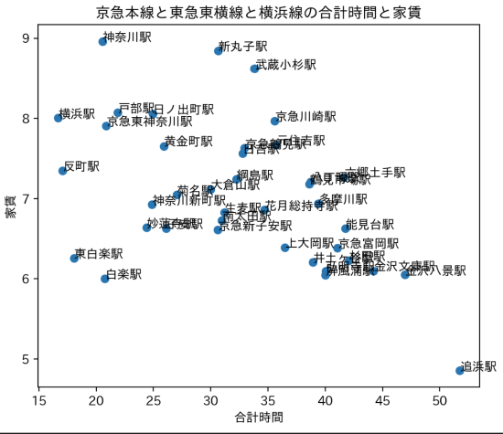
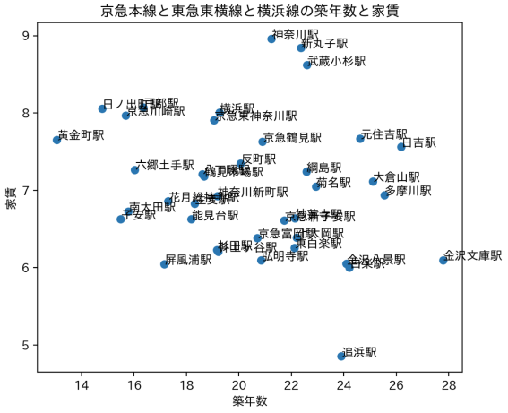
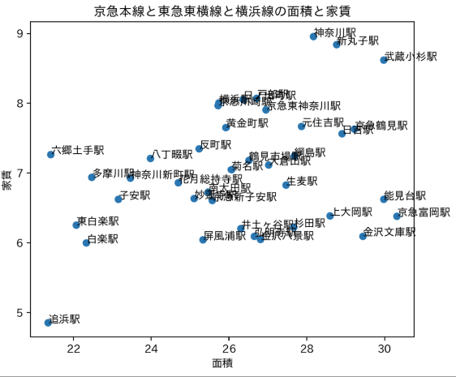

第6回課題
[賃貸情報の分析]
京急本線、東横線と横浜線、三つの線路から選びました。値段を７万円以下に限定されてます。
そして、合計時間は40分以下、築年数はできるだけ新しい、面積もできるだけ広いにしました。
合計時間と家賃

築年数と家賃

面積と家賃

おすすめの駅
「南太田駅」「子安駅」「東白楽駅」
「南太田駅」は30分くらいの通勤時間です、7万円以下でトップ2の築年数面積もなんと26平米がある。
築年数と面積を重視する方に向いてると思います。
「子安駅」は25分の通勤時間です、7万円以下で築年数は一番新しい、しかし、面積は23平米くらい。
面積を気にしない方におすすめ。
「東白楽駅」は7万円以下で合計時間が一番短い駅である。しかし、面積は狭いです、築年数もそんなに新しくない
朝もっと寝たい学生さんにおすすめと思います。